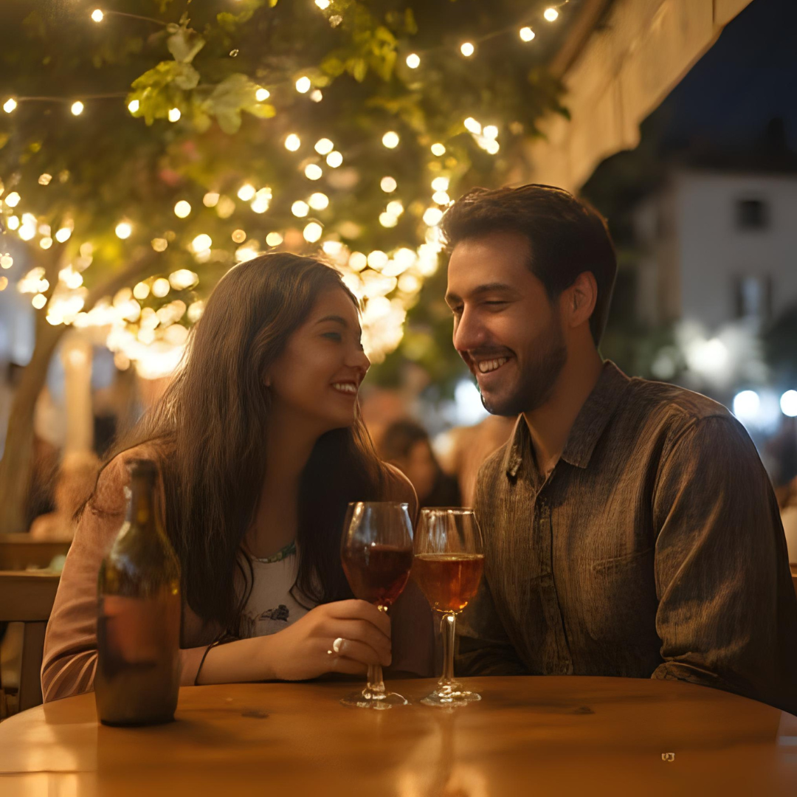

Liam, a software engineer from Seattle, and Isabella, a classically trained cellist from Boston, both signed up for MatchAI not expecting much. But the AI saw what they didn’t: their shared love for complexity, quiet mornings, and Rachmaninoff. After three weeks of chatting and one spontaneous meetup in Chicago, they realized the algorithm had seen into their souls. Two years later, they played a duet — code and cello — at their wedding.
Theo, a Brooklyn barista with a love of slam poetry, wasn’t expecting much from MatchAI. But then he matched with Julian, a PhD student studying 19th-century literature in Chicago. The AI had picked up on their mutual love of verse, emotional vulnerability, and 2 a.m. existential questions. After exchanging audio poems for weeks, they finally met. Their first date was in a used bookstore — and they never stopped writing together.
MatchAI matched Tara, a high-powered corporate lawyer, with Ben, a full-time wildlife photographer. She wore heels; he wore hiking boots. But the AI picked up on their mutual independence, love of deep conversation, and appreciation for solitude. Now, they alternate between courtrooms and jungles, and wouldn’t have it any other way.
 Both Carol and Frank had lost their spouses years ago and joined MatchAI out of curiosity. The AI gently paired them based on grief journey stages, humor preferences, and attachment styles. They bonded over shared loss — and the joy of rediscovery. Now, they host a podcast for seniors looking for love again.
Both Carol and Frank had lost their spouses years ago and joined MatchAI out of curiosity. The AI gently paired them based on grief journey stages, humor preferences, and attachment styles. They bonded over shared loss — and the joy of rediscovery. Now, they host a podcast for seniors looking for love again.
 Yuki, a Japanese UX designer living in San Francisco, and Diego, a Colombian entrepreneur in Miami, matched on MatchAI despite speaking different native languages. The AI prioritized emotional expression and values over language preferences, and even recommended shared bilingual learning tools. A year later, they’re engaged — and speaking fluent Spanglish-Japanese-English love.
Yuki, a Japanese UX designer living in San Francisco, and Diego, a Colombian entrepreneur in Miami, matched on MatchAI despite speaking different native languages. The AI prioritized emotional expression and values over language preferences, and even recommended shared bilingual learning tools. A year later, they’re engaged — and speaking fluent Spanglish-Japanese-English love.
MatchAI matched Mina, a med student in New York, and Arjun, a graphic designer in London. Most apps would’ve filtered them out due to distance, but MatchAI prioritized long-term goal alignment and communication resilience. They dated long-distance for 18 months before Mina moved to the UK. Their motto? “Distance doesn’t scare us — bad Wi-Fi does.